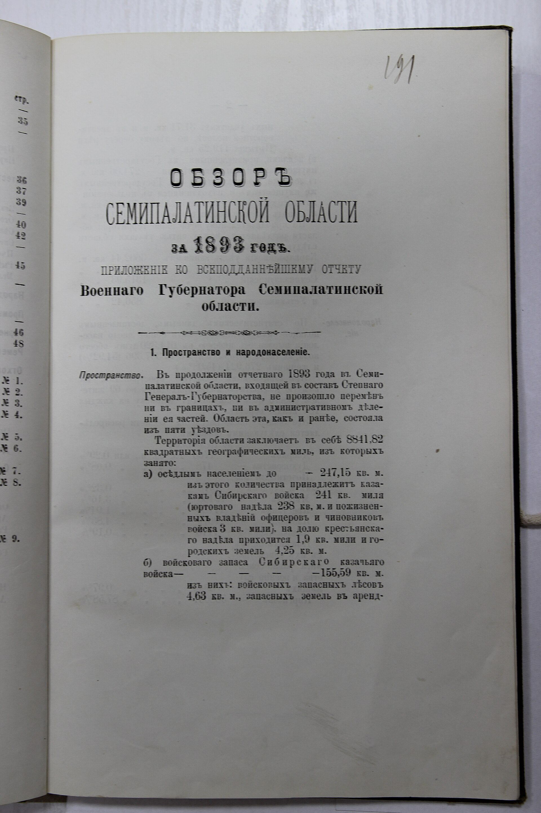
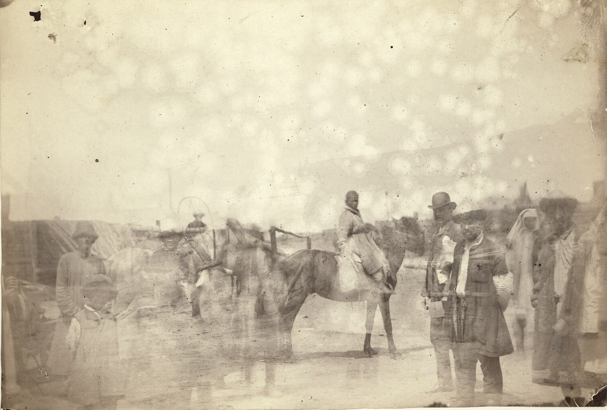
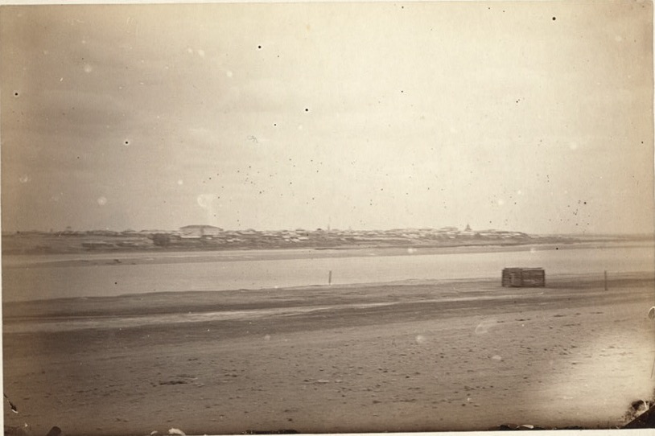

Дело · 1905
Первая всеобщая перепись населения Российской империи, 1897 г.: Семипалатинская область
Государственный архив ВКО · Ф. 1-П
Ф. 1-П, оп. 1, д. 245
открыт

Фото · 1885
Паромная переправа через Иртыш, 1885
Государственный архив ВКО · Ф. 2-ФД
Ф. 2-ФД, оп. 1, д. 14
открыт

Дело · 1851
Описание герба города Семипалатинска, 1851
Государственный архив ВКО · Ф. 1-П
Ф. 1-П, оп. 2, д. 9
открыт

Фото · 1885
Базарная площадь в Семипалатинске, 1885
Государственный архив ВКО · Ф. 2-ФД
Ф. 2-ФД, оп. 1, д. 15
открыт

Дело · 1893
Обзор Семипалатинской области за 1893 год
Государственный архив ВКО · Ф. 1-П
Ф. 1-П, оп. 1, д. 118
открыт

Карта · XVIII в.
План монастыря Абылай-кит
Государственный архив ВКО · Ф. 15
Ф. 15, оп. 2, д. 37
читальный зал

Фото · 1850-е
Вид города Семипалатинска, 1850-е годы
Государственный архив ВКО · Ф. 120
Ф. 120, оп. 1, д. 4
открыт

Фото · 1885
Группа жителей аула близ Семипалатинска, 1885
Государственный архив ВКО · Ф. 2-ФД
Ф. 2-ФД, оп. 1, д. 16
открыт

Фото · 1919
Алашская милиция на улице Семипалатинска, 1919
Государственный архив ВКО · Ф. 2-ФД
Ф. 2-ФД, оп. 1, д. 31
ограничен

Фото · 1885
Семипалатинск с правого берега Иртыша, 1885
Государственный архив ВКО · Ф. 2-ФД
Ф. 2-ФД, оп. 1, д. 12
открыт

Фото
Семипалатинск, общий вид, 1885
Государственный архив ВКО · Ф. 2-ФД
Ф. 2-ФД, оп. 1, д. 11
открыт

Фото
Аул у Семипалатинска (полный кадр), 1885
Государственный архив ВКО · Ф. 2-ФД
Ф. 2-ФД, оп. 1, д. 17
открыт